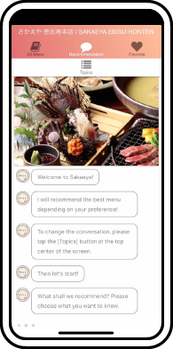
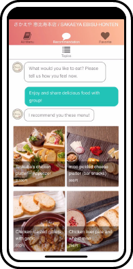
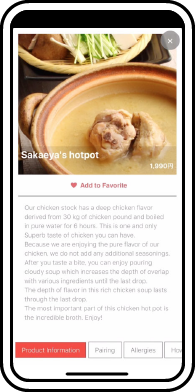
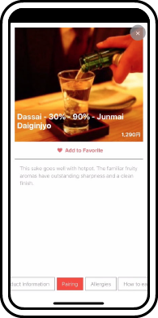
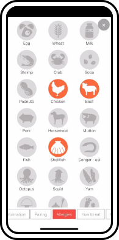
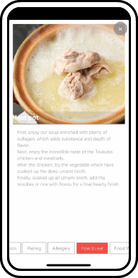
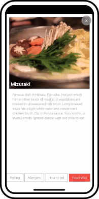
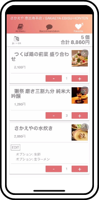

-
1
お店自慢のお料理に、
相性のいいお酒を合わせて
おすすめ。人気メニューや旬の味、その日の特別な一皿を引き立てるお酒をレコメンド。オーダーを促進し、売上に貢献します。
-
2
ハラールやアレルギー、
ベジタリアン向けの
情報にお応え。食べられない食材や料理がある旅行者にも、安全で安心な食事を楽しんでいただくための情報を提供します。
-
3
24時間・365日・
5ヶ国語対応Satisfoodが休むことはありません。サービスにムラやムダもありません。人間ではできないことだから、AIが引き受けました。
あなたのお店を
世界とつなぐ。
「Satisfood」は、チャット型のAIメニュー。
外国人旅行者の食べたいや知りたいニーズに応え、
繁盛するお店に導くWEBサービスです。
Satisfoodとは？
外国人旅行者に
もっとミラクルな
「食」体験を！
外国人旅行者対応のスタッフ不足を解消し、
売上げアップに貢献するSatisfoodは
テーブルのAIコンシェルジュ
特長とメリット
機能と使い方
QRコードをかざすだけ。
後はスマートメニューエンジン
「chachatto（チャチャット）」にお任せ！
1
テーブル上のQRコードを、
スマートフォンで読み取ります。
SatisfoodはWebサービスなので
ダウンロードは必要ありません。
2
多言語に翻訳した
お店のメニューを表示します。
グルメサイトなどに登録してある
メニューデータをベースに、
お店独自のメニューが作成可能です。

3
チャットでの会話から、
お客様の要望を満たすお料理を提案します。
お店のメニューを解析した上で、
お客様の気持ちや好みを聞き出し、
スマートメニューエンジン「CHACHATTO」が
最適なメニューを提案します。

4
お料理のこだわりを説明します。
シェフや板前が腕を振るった料理を説明。
日本での「食」体験を楽しんでもらいます。

5
お料理と相性のいいお飲み物を提案します。
料理の引き立て役である飲み物を、
料理の相性からマッチング。
最適な組み合わせで、
最高の時間を演出します。

6
ハラールやアレルギー、
ベジタリアン向けの情報を提供します。
食べられない食材や料理がある旅行者にも、
安全で安心な食事を
楽しんでいただくための情報を提供します。

7
お料理の食べ方を紹介します。
食べ方を理解することも「食」の
醍醐味の一つと考えたSatisfoodでは、
美味しい食べ方を紹介します。

8
お料理や食材を説明します。
見慣れない料理に戸惑いや心配がないよう、
使用している食材や産地、
味などを説明します。

9
日本語でオーダーします。
こだわりや食べ方、飲み物が決まったら、
お店のスタッフへ日本語に変換してオーダーします。
ここまで一切、日本語を使わなくて大丈夫です。

Satisfood導入フロー
STEP01
お問い合わせ
Satisfoodの導入をご検討の方は、
お気軽にお問い合わせください。
お問い合わせは、専用フォームまたはお電話から承ります。
00-0000-0000
（受付 月〜金曜日 9：00〜18：00／定休日 土・日・祝日）
お申し込み・お問い合わせSTEP02
ヒアリング・
デモンストレーション
御社にお伺いし、外国人旅行者の利用の現状や対応への課題などを
ヒアリングさせていただきます。
また、Satisfoodの機能や導入事例などをデモンストレーションしながら、
改善点などを抽出し、
サービス開始に必要な環境や仕様などを
導き出します。
STEP03
お見積り
Satisfoodのご提案書と
概算のお見積りをご提示します。
STEP04
要件定義
ご要望やご予算、開発スケジュールなどを踏まえ、
要件定義書を作成します。
STEP05
メニューの作成
作成に必要なデータを洗い出し、
データベースに登録する際の
過不足を確認した上で
独自メニューを作成します。
進捗情報は逐一ご連絡します。
STEP06
納品とテスト
簡単な操作手順書（マニュアル）などと一緒に納品させていただきます。
また、ご要望に沿った機能や品質を満たしているか、
テストでご確認いただきます。
STEP07
サービス本稼働・保守サポート
Satisfoodの稼働を開始し、メニュー改定や保守サポート（有償）を
させていただきます。
やがて日本列島を覆い尽くす、AIフードメニュー本命へ！
ポテンシャル
Satisfoodのポテンシャルが
実証されました！
＊自社調べ（2018.6）
Potential01
外国人旅行者の利用率
0%
Potential02
導入したお店に満足した
外国人旅行者 0%
外国人旅行者 0%
Potential03
導入したお店に満足した
外国人旅行者 最大0.0%
外国人旅行者 最大0.0%
Potential04
接客にかかるコストの
減少を実感したお店 0.0%
減少を実感したお店 0.0%
導入実績
導入実績店舗数：
160店舗
＊2019年3月末実績・導入準備店舗を含む
横浜市・相鉄×高島屋・
広島×SOGO
大手雑貨ストア・
大手アパレルグループ内飲食店etc...
外国人スタッフに
頼りっきりだった状況を
変えられることができた
イヤイヤだった
外国人への接客が
とっても楽になりました
日本語でも難しい
料理や酒の説明を
スタッフに
教えなくてもいい
スタッフ負担を
減らすことで、
離職率が下がることに
大きな期待
人間はやるべき仕事と
そうでないことに
線引きができた
例えば、麺の硬さ、
ご飯少なめなどの
細かい要望にも応える
ことができて嬉しい

日本人のお客様と
同じレベルの接客が
できるのが嬉しい
言葉の壁を越え、外国人旅行客の胃袋をつかむ
チャット型AIフードメニューをお役立てください
よくあるご質問
Satisfoodは24時間365日休むことなく、何人でも同時に多言語で接客をします。人と違い、辞めてしまうこともありません。ベジタリアンやハラールの方への対応、お酒と料理のペアリングなど、旅行者の体験価値にフォーカスし、いずれのサービスとも異なった、１ランク上の体験が提供可能です。
Satisfoodは、飲食店の店内で利用するレコメンデーション・エンジンです。国籍、好み、季節、土地などを考慮して、最適な提案をするためにAIを活用しています。例えば、好みのワインがあれば、そこから日本酒の提案をするなど、飲食に関する知識の壁を取り除き、ダイナミックな食体験を提供します。
Satisfoodは不慣れな旅先で旅行者をサポートするレコメンデーション・エンジンです。旅行者は旅先の生活者からの提案を求めています。よほどの緊急時などを除くと、うまく要望を言語化できず、自由入力を可能にしても、会話が継続しないことが分ったため、現在のユーザー・インターフェイスにしました。
お客様の満足度向上と従業員の満足度向上を同時に実現。前者により売上や口コミを増加し、後者により、接客コストを最適化し、従業員の稼働率を上げ、離職率を減少させます。ラグビーW杯やオリンピックなどにおける、外国人向けビジネスを加速させることができます。
Super Duperの主な受賞歴
BizLab 採択（2018）
ＪＢグループ
アクセラレーター 採択（2018）
相鉄×高島屋
アクセラレーション
プログラム 優勝（2018）
スタートアップカタパルト
ファイナリスト（2018）
ENTX
審査員特別賞（2018）
ＪＢグループ
アクセラレーター 採択（2018）